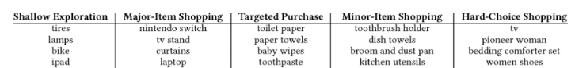
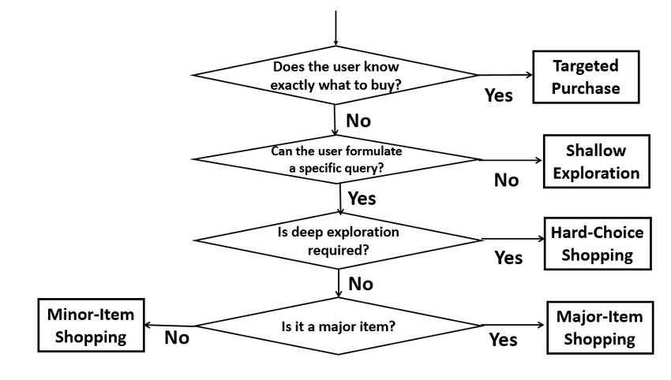
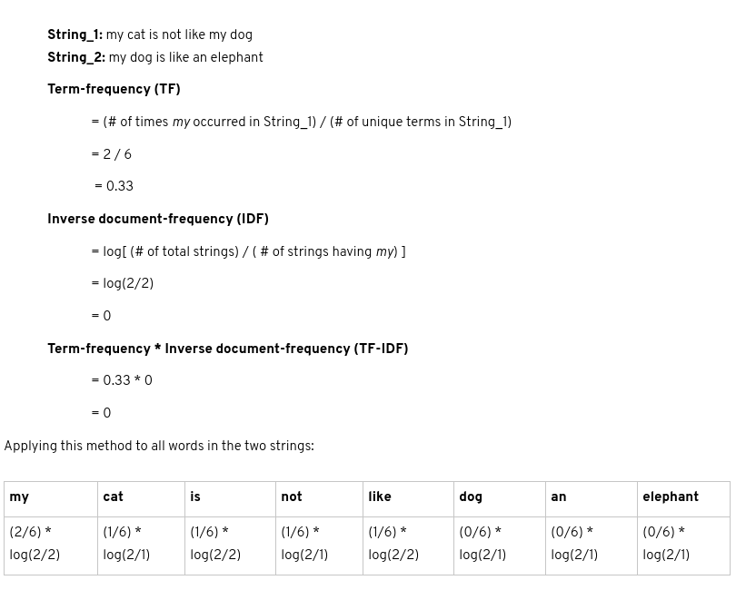
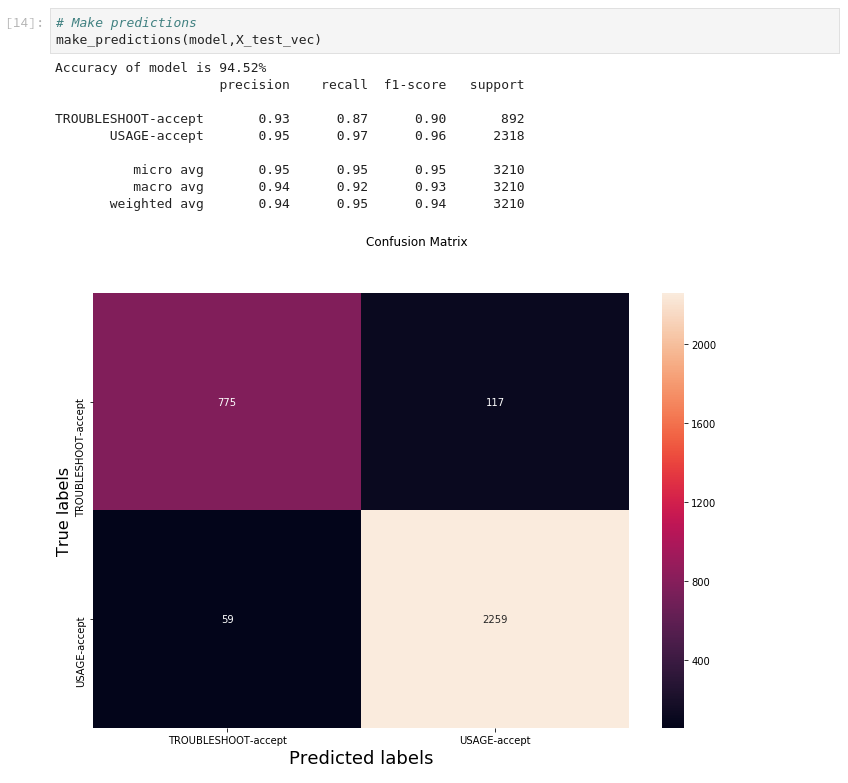
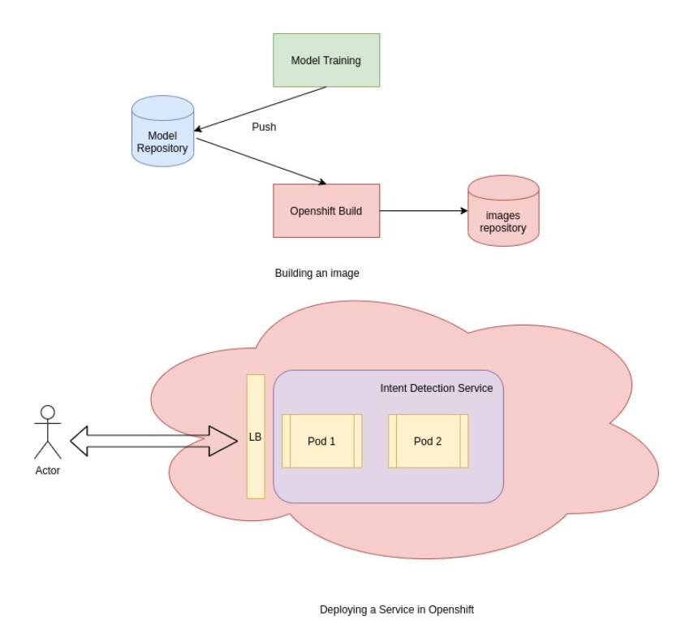
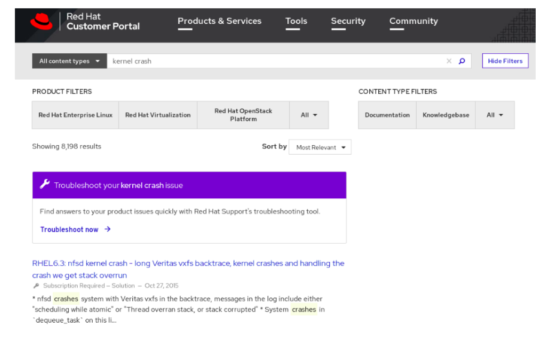

Introduction
Intent Classification is a type of supervised text classification problem. It is used to predict the motivation of the user providing search keywords in a given search engine. Each user visiting the site have a goal in mind and they express in the form of keywords. We have to optimize for satisfying their goal in addition to returning the best documents matching the keywords as search results. In Search for intent, Not inventory[1] Daniel Tunkelang author of Query Understanding publication emphasizes that
“Searchers don’t care what you have in your catalog or how you organize your inventory. They care about what they want. Make it easy for searchers to express their intent, and craft the search experience around their intent.”
Hence as part of Red Hat Customer Portal personalization, we started working on identifying the intents for our site visitor and classify the search queries in order to craft the search experience based on their intent.
Related Work
Classification of searches is domain specific and there is no one size fits all approach. Taxonomy of Web Searches[2] classify the queries into these categories 1. Navigational 2. Informational 3. Transactional

Taxonomy of Ecommerce Searches[3] classifies them into following categories & each with a distinct search behavior.
- Shallow Exploration Queries are short vague queries that a user may use initially in exploring the product space.
- Targeted Purchase Queries are queries used by users to purchase items that they are generally familiar with, thus without much decision making.
- Major-Item Shopping Queries are used by users shopping a major item relatively expensive & requires some serious exploration, but typically in a limited scope of choices.
- Minor-Item Shopping Queries are provided by users to shop for minor items that are generally not very expensive, but still require some exploration of choices.
- Hard-Choice Shopping Queries are used by users who want to deeply explore all the candidate products before finalizing the choice often appropriate when multiple products must be carefully compared with each other.
Examples


We looked at how others are handling the intent classification problem because of the shorter length of the text and latency requirement. Deep Search Query Intent Understanding from LinkedIn provides two designs for modeling 1. Predicting the intent in typeahead search using character models 2. Predicting the intent for complete search queries to do Seach Results Page(SERP) Blending. Each linkedin usecase has its own latency and accuracy requirement, former having higher latency but with lower accuracy whereas the latter with acceptable latency but with higher accuracy. Though they explored deep learning CNN, LSTM, BERT models in this paper, production baseline model used is the traditional logistic regression model. Unless you can reduce the size of the model, latency will pose a challenge for productionizing these bigger models.
“The production baseline model is a logistic regression model, with bag-of-words features, and user profile/behavioral features, etc.”

The next one is Discovering and Classifying In-app Message Intent at Airbnb where they classify the guest messaging intents such as Parking, Checking In and try to provide timely responses. Here they found CNN performed better and has faster training with a shorter serving time.

Problem Framing
We leveraged the redhat customer portal top tasks survey in which most of the users indicated the aspect of problem solving as the main reason for the visit in 4/5 responses. Keeping that in mind, we analyzed the search queries for the patterns and came up with these four buckets.
- Broad Explorational are single worded vague queries provided by users exploring the product portfolio, a component, vulnerability.
- Targeted Queries (Eg: CVE-1243, RHBA-2351, RHSA-3194) such as Bug fixes, Advisories, Enhancements.
- Usage Queries are provided by users wanting to know how to use specific component or aspect of a product.
- Troubleshoot are provided by users facing an issue and more likely leading to case creation.
Instead of providing the model with poor data, we wanted the model to focus only on classifying the Usage and Troublesoot. We avoided passing the models with vague queries and targeted queries and let the keyword search, onebox and curated searches to handle these types of queries.
| INTENT | DEFINITION | EXAMPLES |
|---|---|---|
| Troublesoot | When a user reports an issue/error message or expresses the text in negative forms explicitly that he/she wants to troubleshoot/debug, then such statements are considered to be of TROUBLESHOOT intent | X Window won’t start after updating xorg-x11-server-Xorg package? |
| Usage | USAGE intent is considered when it is more along the lines of how to use a product/component or perform an action. | How can I block video streaming using squid ? |
Data Collection
In order to iterate and perform rapid prototyping, we leverage ML teaching and annotation tool Prodigy. The recommendation is to perform manual annotation with binary label in order to keep cognitive load low. This allows the annotator to focus only one concept at a time. We started looking at the Portal Search queries and manually annotated them as TROUBLESHOOT or not. Please check this excellent text classification tutorial by Ines Montani.
If you only provide a single label, the annotation decision becomes much simpler: does the label apply or not? In this case, Prodigy will present the question as a binary task using the classification interface. You can then hit ACCEPT or REJECT. Even if you have more than one label, it can sometimes be very efficient to make several passes over the data instead of selecting from a list of options. The annotators can focus on one concept at a time, which can reduce the potential for human error – especially when working with complicated texts and label schemes.
$ prodigy textcat.teach troubleshoot en_core_web_sm troubleshoot.jsonl
We collected around 1500 training samples to bootstrap the project with the help of Active learning features provided. Learn more about active learning from here
Example training samples
{"text":"add new nfs storage","label":"USAGE","answer":"accept"}
{"text":"sun.security.validator.ValidatorException: PKIX path building failed: sun.security.provider.certpath.SunCertPathBuilderException: unable to find valid certification path to requested target","label":"TROUBLESHOOT","answer":"accept"}Imports and Utilty functions
def common_word_removal(df, common_words):
"""This is to remove manually identified common words from the training corpus."""
# Manual list of common words to be removed based on above data. This will change based on text data input.
# We cannot automate this to directly omit the first x words as these words are very relevant to our use case
# of inferring intent
df['text'] = df['text'].apply(lambda x: " ".join(x for x in x.split() if x not in common_words))
return df
def drop_nulls(df):
"""This function drops the rows in data with null values.
It takes in the raw queries as the input."""
print('Number of queries with null values: ' + str(df['text'].isnull().sum()))
df.dropna(inplace=True)
return df
def avg_word(sentence):
"""Used in EDA to calculate average wordlength per query"""
words = sentence.split()
return (sum(len(word) for word in words)/len(words))Data Preparation
Loading the data in dataframe
This reads the dataset in json lines format into pandas dataframe.
def load():
raw_data - load_raw_data(pd.read_json(f"{DATA_DIR}/portalsearch/portalsearch.jsonl", lines=True))
# Joining the 'label' and 'answer' column to become one.
# E.g.: Troubleshoot-accept, Troubleshoot-reject, Usage-accept, Usage-reject
raw_data['label'] = raw_data['label'] + '-' + raw_data['answer']
# Only selecting the 'accept' labels.
raw_data = raw_data[raw_data['label'].isin(['TROUBLESHOOT-accept','USAGE-accept'])]
raw_data.drop('answer',axis=1,inplace=True)
return raw_dataPreprocessing
We performed the following preprocessing
- Adding standard features like word count, character count and average word length per query to the dataframe.
- Remove captalization by lowercasing all words
- Removing punctuations and special characters
- Remove traditional stopwords like “the”, “a”, “an” and “and”
- Remove noisy data that are of low value and commonly occuring terms
- Lemmatization
def eda(df):
"""Classic EDA like word count per query, average word length per query etc."""
# Word count per query
df['word_count'] = df['text'].apply(lambda x: len(str(x).split(" ")))
# Character count per query
df['character_count'] = df['text'].str.len() # this also includes spaces
# Average word length per query
df['avg_wordlength_per_query'] = df['text'].apply(lambda x: avg_word(x))
return dfdef preprocessing(df):
"""Traditional Pre-processing steps."""
# Lower case for all words. This helps in removing duplicates later
df['text'] = df['text'].apply(lambda x: " ".join(x.lower() for x in x.split()))
# Removing Punctuations and special characters using regular expression
df['text'] = df['text'].str.replace('[^\w\s]','')
# Removing non-english words
df['text'] = df['text'].apply(lambda row: row.encode('ascii',errors='ignore').decode())
# Removing stopwords
df['text'] = df['text'].apply(lambda x: " ".join(x for x in x.split() if x not in stop))
# Lemmatization
lemmatizer = WordNetLemmatizer()
df['text'] = df['text'].apply(lambda x: " ".join([lemmatizer.lemmatize(word) for word in x.split()]))
# Common word removal
# Remove commonly occurring words from our text data
# as their presence will not of any use in classification of our text data.
# This step would require manual scanning through the list.
frequent_words = pd.Series(' '.join(df['text']).split()).value_counts()
print('Top 20 frequent words are \n' + str(frequent_words[:20]))
print('\n')
# Rare words removal
# Because they’re so rare, the association between them and other words is dominated by noise.
# Hence we can remove them and later decide whether or not the results improved based on it.
# Printing out rare words occuring less than 50 times.
rare_words = frequent_words[frequent_words < 50]
print('Top 10 rare words are: \n' + str(rare_words[-10:]))
print('\n')
# Dropping queries which are empty after all the pre-processing
df['text'].replace('', np.nan, inplace=True)
df.dropna(inplace=True)
print('The final number of queries after preprocessing are: ' + str(df.shape))
return dfModeling
Train Test Split
Next we split the data into training and test data with 3:1 split
def train_test_splits(df, test_size):
"""Splitting raw data into training and test data."""
X = raw_data['text']
y = raw_data['label']
X_train, X_test, y_train, y_test = train_test_split(X, y, test_size=test_size, random_state=42)
return X_train, X_test, y_train, y_test# Splitting raw dataset into testing and training data
X_train, X_test, y_train, y_test = train_test_splits(raw_data,0.33)Vectorization
The text needs to be converted into a format that a model could interpret ie numbers. This process is called vectorization. We started with Term Frequency-Inverse Document Frequency(TF-IDF) method using sklearn TfidfVectorizer
TF-IDF is a way to calculate the ‘importance’ of each word in the dataset. This vectorizer calculates how often a given word appears in the string, and downscales words that appear across different strings.
An example illustrating how tfidf is calculate for two strings

Code sample
def text_vectorization_tfidf(X_train,X_test):
"""tf-idf vectorization using sklearn"""
vectorizer = TfidfVectorizer()
X_train_vec = vectorizer.fit_transform(X_train)
X_test_vec = vectorizer.transform(X_test)
# pretty printing the vocabulary built by the tf-idf vectorizer
# pprint.pprint(vectorizer.vocabulary_)
return vectorizer, X_train_vec, X_test_vec
# Text Vectorization of training data
vectorizer, X_train_vec, X_test_vec = text_vectorization_tfidf(X_train, X_test)LinearSVC
The algorithm we used is a linear support vector classifier (SVC), a commonly used text classification algorithm that works by finding the line or hyper-plane that best differentiates two groups of data points. It is a Support Vector Machine with a linear kernel.Learn more about SVM from here
Here we are performing 3-fold cross validation to improve the generalization and minimize the overfitting on validation set. With the given training set, it is split into 3 folds and one of the fold is used for validation and a score is calculated. Similarity this process repeated with the rest of the folds and the average of all the scores is used as the final score. Please see the excellent scikit guide here for additional details
def build_model(X_train_vec, y_train):
"""Build an SVM model with a linear kernel"""
svm = LinearSVC(class_weight="balanced")
linear_svc = CalibratedClassifierCV(svm,method='sigmoid')
# 3-fold Cross-Validation
print(cross_val_score(linear_svc, X_train_vec, y_train, cv=3))
# Fitting the model after tuning parameters based on cross-validation results
linear_svc.fit(X_train_vec, y_train)
return linear_svc
# Building, cross validation and fitting of model
model = build_model(X_train_vec, y_train)Evaluation
The model can be interpreted by looking at the confusion matrix of true labels and predicted labels. Confusion matrix(a.k.a error matrix) allows to understand the performance of the model on unseen or test queries. We can see the accuracy of the model to be around 95%
def make_predictions(model,X_test_vec):
"""Makes predictions and spits out confusion matrix."""
# Predicting results on test data
predictions = model.predict(X_test_vec)
# Accuracy of model
print('Accuracy of model is ' + str(round(accuracy_score(y_test, predictions)*100,2)) + '%')
# Precision, Recall and other metrics
print(str(classification_report(y_test, predictions, target_names=['TROUBLESHOOT-accept', 'USAGE-accept'])))
# Confusion Matrix
labels = ['TROUBLESHOOT-accept','USAGE-accept']
Confusion_Matrix = confusion_matrix(y_test, predictions, labels)
# Plotting the confusion matrix
df_cm = pd.DataFrame(Confusion_Matrix, index = labels,
columns = labels)
ax = plt.figure(figsize = (12,8))
sns.heatmap(df_cm, annot=True,fmt='g')
# labels, title and ticks
ax.suptitle('Confusion Matrix')
plt.xlabel('Predicted labels', fontsize=18)
plt.ylabel('True labels', fontsize=16)
Deployment
Web application
Once the model is trained and saved, the next step is to create a simple REST endpoint called introspect where the client applications can send the text blob and get the intent prediction as the response. The application endpoint is built using python, flask web framework, gunicorn web containier with 4 parallel workers. The overview of the application is as follows
- Loading the model at the application startup
- Once the query is received, send it to the model only if it is not a known lexical pattern like CVE, Errata, numeric id, url. This prevents garbage inputs and invalid predictions.
- If the query is one of the known patten return the response with the intent as OTHER.
- Transform the query into a vectorized form before model prediction
- Predict the query and return the prediction, probablity of the predicted class as confidence score.
Containerizing the application
Basically containeraization is a modern way to package the application with your code, dependencies, configuration into a format (Eg: Docker Image) suitable to run anywhere whether it’s public cloud like aws or in your own datacenter.
Code Sample for util.py
from flask import request, Response
from validators import ValidationFailure
from validators.url import url
from functools import wraps
import logging
def is_url(keyword: str) -> bool:
'''
Returns True if the keyword contains a valid url else return False
'''
try:
value = url(keyword)
except ValidationFailure:
return False
return value
def has_known_lexical_pattern(keyword: str) -> bool:
'''
Return True if the keyword contains known navigational intent like CVE, Errata, id or url else
returns False
'''
#Navigational intent for CVE, Errata, id or url
return keyword.lower().startswith(('cve', '(cve', 'rhsa', '(rhsa', 'rhba', '(rhba')) or keyword.isdigit() or is_url(keyword)
def has_other_intent(query: str) -> bool:
return has_known_lexical_pattern(query)
def invalid_input():
"""Sends a 400 Bad Request"""
return Response(
'ensure this value has at mininum 3 characters and most 500 characters', 400,
{})
def validate_input (f):
@wraps(f)
def decorated(*args, **kwargs):
try:
query = request.args ['query']
if len (query) < 3 or len (query) > 500:
raise Exception ()
return f(*args, **kwargs)
except:
logging.info("Input validation failed")
return invalid_input ()
return decoratedCode Sample for predict.py Intent Prediction
from flask import Flask, jsonify, request, Response
from functools import wraps
from util import validate_input, has_other_intent
import json, pickle, datetime, logging, uuid
from typing import Dict
application = Flask(__name__)
def load_model() -> None:
'''
Initialize the global variables to load the model.
'''
global vectorizer, model
vectorizer = pickle.load(open("./models/tfidf_vectorizer.pkl", "rb"))
model = pickle.load(open("./models/intent_clf.pkl", "rb"))
def initialize ():
load_model()
def strip_accept_label(prediction:str) -> str:
if '-' in prediction:
return prediction.split('-')[0]
return prediction
@application.route("/introspect", methods = ["GET"])
@validate_input
def introspect() -> Dict:
"""
Intent Prediction
"""
query = request.args ['query']
# Return intent as OTHER for CVE, Errata (RHBA, RHSA), id or url
if has_other_intent(query):
response = {"query": query, "intent": 'OTHER', "confidence_score": 1,
"req_id": str(uuid.uuid4())}
logging.info(f"Prediction response : {response}")
return response
query_transformed = vectorizer.transform([query])
prediction = model.predict([query_transformed.toarray()[0]])[0]
prob = model.predict_proba([query_transformed.toarray()[0]])[0]
confidence_score = round(max(prob), 2)
response = {"query": query, "intent": strip_accept_label(prediction), "confidence_score": confidence_score,
"req_id": str(uuid.uuid4())}
return response
initialize()
if __name__ == "__main__":
initialize()
application.run(debug = True, host = "0.0.0.0", port = "8080")Dockerfile sample
FROM registry.access.redhat.com/rhscl/python-36-rhel7
USER root
ADD . /opt/customer-portal-search-intent/
WORKDIR /opt/customer-portal-search-intent
RUN wget http://gss-rdu-repo.usersys.redhat.com/repo/config/intent-detection/intent_clf-version1.pkl \
&& wget http://gss-rdu-repo.usersys.redhat.com/repo/config/intent-detection/intent_clf.pkl \
&& wget http://gss-rdu-repo.usersys.redhat.com/repo/config/intent-detection/tfidf_vectorizer-version1.pkl \
&& wget http://gss-rdu-repo.usersys.redhat.com/repo/config/intent-detection/tfidf_vectorizer.pkl \
&& mv *.pkl models/ \
&& pip install -r requirements.txt
USER 1001
EXPOSE 8080 8443
ENTRYPOINT ["./run_intent_detection_service"]
CMD [ ]
run_intent_detection_service
#!/bin/bash
# Lay down the cert for this server
KEYFILE=cert/rsa.key
CERTFILE=cert/ssl.crt
BIND="127.0.0.1:8080"
if [ -f $KEYFILE ] && [ -f $CERTFILE ] ; then
OPTS="--keyfile $KEYFILE --certfile $CERTFILE $OPTS"
BIND="0.0.0.0:8443"
fi
# num_workers = (2 * cpu) + 1 => 9
OPTS="$OPTS -b $BIND --workers 5 --log-level=DEBUG "
export REQUESTS_CA_BUNDLE=$(pwd)/root.crt
set -x
gunicorn main:application $OPTS --access-logfile - --access-logformat "{'remote_ip':'%(h)s','request_id':'%({X-Request-Id}i)s','response_code':'%(s)s','request_method':'%(m)s','request_path':'%(U)s','request_querystring':'%(q)s','request_timetaken':'%(D)s','response_length':'%(B)s'}"Building Image and Deployment on OpenShift
In order to make the service available to our users we are going to lean on OpenShift, container platform for building the image and deployment.
Once we have trained our model and have the application packaged in a Dockerfile, all we need to provide is BuildTemplate and DeploymentTemplate.
BuildTemplate provides information such as source repository where the Dockerfile(assumed to be at the root), what buildstrategy to use(in this docker strategy) and finally about the ImageRepository for storing the built images.
DeploymentTemplate contains info about cpu, memory requirements on the deployments, number of pods(instances of the services) for availablility and seamlessly transition between the instances during deployment rollouts without service interruption. 
Integration
Let’s see how this model is integrated with the overall product ecosystem.As a first step in using the service, we wanted to avoid any risks and carefully provide the options to the user to choose troubleshoot experience when we detect the same intent from the query.
In the below example user searching for kernel panic occuring in Red Hat Linux systems, the service predicted the TROUBLESHOOT with greater 70% confidence and a banner showing option to user allowing them to choose TROUBLESHOOT experience.

Conclusion
- In this post, we covered how we went from ideation, data collection, module building, deployment and finally integrating with the product.
- There are constraints such as shorter text, latency, model size in choosing a modeling technique for intent classification and creating a simpler & traditional model such as LinearSVC can always be a better fit for such scenarios.
References
- Search: Intent, Not Inventory
- Broder, Andrei. (2002). A Taxonomy of Web Search. SIGIR Forum. 36. 3-10. 10.1145/792550.792552
- Sondhi, Parikshit & Sharma, Mohit & Kolari, Pranam & Zhai, ChengXiang. (2018). A Taxonomy of Queries for E-commerce Search. 1245-1248. 10.1145/3209978.3210152
- Deep Search Query Intent Understanding
- Discovering and Classifying In-app Message Intent at Airbnb
- Prodigy - ML teaching and annotation tool
- SVM
- Active Learning
- OpenShift Builds 10.OpenShift Deployments